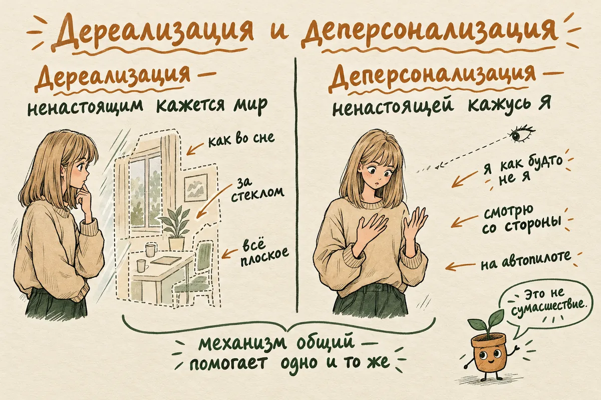
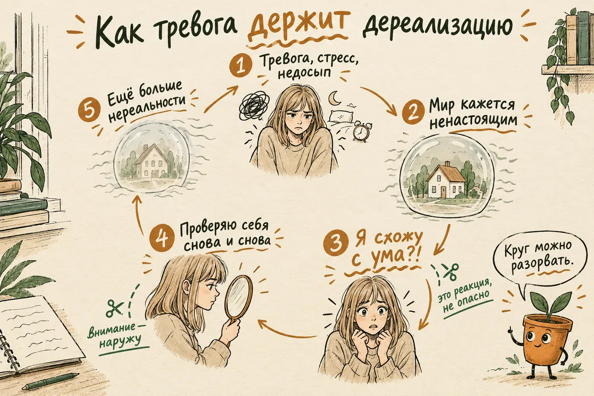
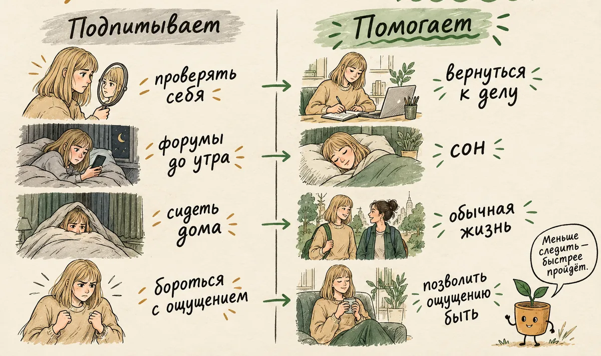

Дереализация и деперсонализация: что это простыми словами, симптомы, причины и как справиться
Обновлено: 17.10.2026 · Источники проверены: 17.10.2026 · 18 минут чтения
Подготовлено по материалам NHS, описаниям в МКБ-11 и рецензируемым исследованиям расстройства деперсонализации-дереализации
Дереализация — это состояние, при котором окружающий мир кажется ненастоящим: плоским, далёким, как будто вы смотрите кино, видите всё сквозь стекло или во сне. Деперсонализация — то же самое по отношению к себе: «я как будто не я», «смотрю на себя со стороны». Чаще всего так нервная система реагирует на сильную тревогу, панику, стресс или недосып. Это очень пугает, но само по себе не означает сумасшествия: при дереализации человек понимает, что мир настоящий, ему просто так не кажется. Ниже — как это ощущается, почему возникает, что делать во время приступа и как выйти из состояния, если оно затянулось.
2. Почувствуйте опору: стопы на полу, ладони на столе или коленях.
3. Переведите внимание наружу: назовите вслух пять предметов, которые видите, и спокойно дышите, не форсируя вдох.
4. Обычно такой эпизод проходит за минуты или часы. Если ощущение нереальности сопровождается слабостью или онемением половины тела, нарушением речи или зрения, сильной головной болью, голосами или мыслями о том, чтобы не жить, — звоните 112.
То, что вы замечаете странность ощущений и тревожитесь из-за неё, — хороший знак: понимание того, что мир настоящий, сохранено. Подробнее — в разделе о приступе.
- Что такое дереализация простыми словами
- Дереализация и деперсонализация: в чём разница
- Как ощущается дереализация: симптомы
- Это не сумасшествие: чем дереализация отличается от психоза
- Почему возникает дереализация
- Дереализация при тревоге и панических атаках
- Сколько длится дереализация
- Когда это расстройство деперсонализации-дереализации
- Что делать во время приступа дереализации
- Как выйти из затянувшейся дереализации
- Как лечат дереализацию
- Дереализация у подростков
- Когда и к какому врачу обращаться
- Частые вопросы
Что такое дереализация простыми словами
Дереализация — это ощущение, что окружающий мир стал ненастоящим, хотя вы знаете, что он настоящий. Предметы, люди, улица выглядят как обычно, но восприятие будто отключили от эмоций: всё плоское, бледное, далёкое, словно за стеклом, в тумане или на экране. Знакомая комната может показаться чужой, а друг — актёром, который хорошо играет роль друга.
Слово пришло из психиатрии и означает буквально «утрата реальности». Звучит пугающе, но описывает именно ощущение, а не реальную потерю связи с миром. Человек при дереализации продолжает понимать, где он, кто рядом и что происходит, — ему просто так не кажется.
Само по себе это переживание очень частое. По систематическому обзору эпидемиологических исследований, кратковременные эпизоды деперсонализации и дереализации хотя бы раз в жизни бывали у 26–74% людей, а в момент травмирующего события — у 31–66%. Другое дело, когда ощущение не уходит неделями и мешает жить, — об этом отдельный раздел.
Дереализация и деперсонализация: в чём разница
Дереализация касается мира вокруг, деперсонализация — самого себя. Это два лица одного переживания отчуждения, и они часто приходят вместе, поэтому врачи описывают их одним состоянием: в МКБ-11 это расстройство деперсонализации-дереализации (6B66), в МКБ-10, по которой ставят диагнозы в России, — синдром деперсонализации-дереализации (F48.1).
| Дереализация | Деперсонализация | |
|---|---|---|
| Что кажется ненастоящим | Мир вокруг: предметы, люди, место | Я сам: тело, мысли, чувства, голос |
| Как описывают | «Как во сне», «за стеклом», «декорация», «всё плоское» | «Я не я», «смотрю на себя со стороны», «живу на автопилоте» |
| Восприятие | Цвета тусклые, звуки приглушённые, расстояния искажены | Руки и голос кажутся чужими, отражение — незнакомым |
| Эмоции | Знакомое не вызывает привычного отклика | Чувства «выключены», радость и грусть как будто чужие |
Разбираться, что именно у вас, — дереализация или деперсонализация, — для самопомощи почти не важно: механизм у них общий, и помогает одно и то же.

Как ощущается дереализация: симптомы
Главный симптом дереализации — ощущение нереальности окружающего при сохранённом понимании, что оно реально. Вокруг него собираются другие изменения восприятия. У каждого набор свой, но чаще всего люди описывают такое:
- Мир «за стеклом» или в тумане. Между вами и окружающим будто прозрачная перегородка или пелена.
- Всё плоское, как картинка. Пропадает объём, предметы выглядят нарисованными или как в компьютерной игре.
- Тусклые или, наоборот, слишком резкие цвета. Свет режет глаза, или всё стало серым.
- Звуки приглушены или доносятся издалека. Голоса как будто через вату или из соседней комнаты.
- Искажение расстояний и размеров. Предметы кажутся дальше или ближе, чем есть, комната — больше или меньше.
- Странное течение времени. Минуты тянутся, а недавнее кажется далёким прошлым, или наоборот.
- Знакомое как чужое. Свой дом, родные, улица не вызывают привычного чувства «моё».
При деперсонализации добавляется ощущение отстранённости от себя: тело как будто не ваше, движения происходят «сами», мысли звучат как чужие, в зеркале — знакомое лицо, но «не я». Многие говорят об эмоциональном онемении: умом понимают, что любят близких, но не чувствуют этого.
Почти всегда к этому присоединяется страх: «я схожу с ума», «это навсегда», «у меня что-то с мозгом». Именно он делает состояние таким мучительным — и, как будет видно ниже, во многом его поддерживает.
Это не сумасшествие: чем дереализация отличается от психоза
Главное отличие — сохранная проверка реальности: при дереализации человек понимает, что ощущение нереальности идёт изнутри, а мир на самом деле не изменился. В МКБ-11 это прямо записано в описании расстройства деперсонализации-дереализации. При психозе эта граница может теряться, и необычные переживания воспринимаются как факт.
- При дереализации мысль обычно звучит так: «Мне кажется, что мир ненастоящий, и это меня пугает». При психозе может появиться твёрдая уверенность: «Мир подменили, за мной следят», — которую не удаётся поколебать.
- Дереализация сама по себе — это изменение восприятия, а не голоса или видения, которые воспринимаются как реальные.
- При дереализации человек обычно ищет объяснение, потому что состояние ему чуждо. При психозе необычные переживания чаще кажутся правдой, в которую не верят другие.
Отдельно о самом частом страхе — шизофрении. Нет оснований считать, что дереализация «перерастает» в шизофрению. Но ощущения нереальности встречаются при многих состояниях, в том числе иногда в начале психоза, поэтому важна вся картина, а не одно ощущение. Если, кроме нереальности, ничего из списка ниже нет, гораздо чаще за ней стоят тревога, стресс, недосып, депрессия или вещества.
Почему возникает дереализация
Точный механизм дереализации до конца не известен; одна из основных объяснительных моделей описывает её как защитную реакцию: при сильной перегрузке мозг приглушает эмоциональную окраску восприятия. Сигнал о мире доходит, а привычного чувства к нему нет — отсюда ощущение нереальности. В острой опасности такое «отстранение» может помогать действовать хладнокровно, но иногда оно включается и тогда, когда внешней опасности нет. Это гипотеза, которая хорошо объясняет многие случаи, но не все.
В крупных сериях наблюдений людей с расстройством деперсонализации — 117 человек в США и 204 человека в Великобритании — чаще всего первый эпизод запускали:
- Сильный стресс — конфликт, потеря, перегрузка, тяжёлые события.
- Тревога и панические атаки. Дереализация — один из симптомов паники, о ней ниже.
- Депрессия. Эмоциональное онемение и «жизнь как через стекло» знакомы многим в депрессии.
- Каннабис и галлюциногены. В опросе 394 человек с хронической деперсонализацией почти половина связывала её начало с наркотиками — чаще всего каннабисом и галлюциногенами. Большинство из них до этого употребляли немного, а после — больше не пробовали, но состояние оставалось.
- Травма, особенно в детстве. В обзоре 2023 года самые высокие показатели расстройства были у людей, переживших насилие в отношениях с другими людьми. О том, как ранний опыт влияет на взрослого, — в статье о детских травмах.
Временную дереализацию у многих вызывают и более будничные вещи: бессонная ночь, сильная усталость, похмелье, долгий день перед экраном, джетлаг. Если после хорошего сна состояние проходит, обычно это и было причиной.
Дереализация при тревоге и панических атаках
Дереализация — частый спутник тревоги: в исследованиях людей с паническим расстройством её отмечали от 8 до 83%, в зависимости от того, как спрашивали. Во время панической атаки организм готовится к опасности, дыхание учащается, меняется приток крови, и восприятие на время «отстраняется». Подробно о том, как устроен приступ, — в статье о панических атаках.
Опасность в том, как человек истолковывает это ощущение. Если мысль «я схожу с ума» кажется правдой, она запускает новую волну тревоги, а тревога усиливает дереализацию. Получается замкнутый круг:
- Тревога или стресс — и мозг приглушает восприятие.
- Странное ощущение — мир кажется ненастоящим.
- Пугающее толкование — «это психоз», «я не вернусь».
- Ещё больше тревоги и наблюдения за собой — человек всё время проверяет, «на месте ли» мир.
- Дереализация усиливается — и подтверждает страх.
Именно этот круг, а не сама дереализация, чаще всего делает её затяжной. Хорошая новость в том, что разорвать его можно в любом звене — и прежде всего в третьем и четвёртом: перестать считать ощущение опасным и перестать за ним следить. Как снижать фоновую тревогу — в статье как справиться с тревогой, а если вы хотите понять, насколько она выражена, есть тест на тревожность GAD-7. Он измеряет только тревогу и дереализацию не определяет.

Сколько длится дереализация
Эпизод дереализации, связанный с паникой или стрессом, обычно длится от нескольких минут до нескольких часов и проходит сам, когда спадает тревога. После бессонной ночи или вещества состояние может держаться день-два.
Бывает и так, что дереализация не уходит неделями и месяцами, то ослабевая, то усиливаясь. Чаще всего это происходит, когда к ней присоединяется круг тревоги и наблюдения за собой, о котором выше. У части людей она становится фоном, к которому они почти привыкают, — но это не значит «навсегда»: интенсивность обычно колеблется, и у многих со временем и с помощью терапии состояние отступает.
По наблюдениям исследователей, ослабляют симптомы общение с близкими, в котором человеку спокойно, яркие впечатления — эмоциональные и физические — и расслабление. Усиливают — негативные переживания, стресс, напряжённое общение и незнакомая обстановка. Это полезно знать, чтобы замечать свои закономерности.
Когда это расстройство деперсонализации-дереализации
О расстройстве говорят, когда ощущения нереальности держатся долго или постоянно возвращаются, вызывают сильный дискомфорт или мешают жить, и при этом их не объясняет другое состояние. Под «другим состоянием» понимают паническое расстройство, депрессию, ПТСР, действие веществ или болезни нервной системы — при них дереализация считается симптомом, а не отдельным диагнозом.
Что известно о самом расстройстве:
- Встречается примерно у 1% людей. Такую оценку дают и обзор 2004 года (1–2% по данным популяционных опросов), и обзор 2023 года (около 1%). Чаще у подростков и молодых взрослых, а также у людей с тревожными расстройствами и депрессией.
- Начинается рано. Средний возраст начала в американской серии наблюдений — около 16 лет, в британской — около 23 лет.
- Мужчины и женщины болеют примерно одинаково.
- Течение часто хроническое, с колебаниями силы симптомов.
- Его долго не распознают. Люди годами не знают, как назвать своё состояние, боятся рассказать о нём врачу или получают диагноз только тревоги или депрессии.
Если вы узнали себя, это не повод ставить диагноз самостоятельно. Но это повод рассказать о своих ощущениях врачу прямо, теми же словами, которыми вы описываете их себе: «мир как за стеклом», «я как будто не я». Многие этого не делают, боясь, что их сочтут сумасшедшими, — и теряют годы.
Что делать во время приступа дереализации
Во время приступа задача не «вернуть реальность» усилием воли, а снизить тревогу и вернуть внимание к телу и окружающему. Борьба с ощущением и попытки «проверить», ушло ли оно, обычно его усиливают. Если вы за рулём или там, где нужна полная собранность, сначала остановитесь в безопасном месте. Дальше — приёмы, которые помогают многим; выбирайте те, что подходят вам:
- Назовите происходящее. Если такое уже бывало и врач исключил другие причины, скажите себе, можно вслух: «Похоже, это дереализация. Так бывает при тревоге и усталости. Это неприятно, но обычно проходит». Название переводит состояние из «я схожу с ума» в понятное и знакомое.
- Замедлите дыхание без усилия. Делайте выдох чуть длиннее вдоха, например вдох на четыре счёта и выдох на пять-шесть, несколько минут. Не делайте глубоких частых вдохов: от них кружится голова. Если считать неприятно или дыхание сбивается, просто дышите спокойно и переходите к следующему шагу.
- Почувствуйте опору. Прижмите стопы к полу, ладони к столу или коленям, почувствуйте вес тела на стуле. Ощущения тела — самый быстрый мост обратно.
- Сделайте упражнение «5-4-3-2-1». Назовите пять предметов, которые видите, четыре звука, которые слышите, три вещи, которые можете потрогать, два запаха и один вкус. Не проверяйте, «настоящие» ли они, — просто называйте.
- Если хочется, дайте телу ощутимый сигнал. Умыться прохладной водой, подержать в руке что-то холодное, съесть что-то кислое или мятное. Многим такие ощущения помогают вернуть внимание в тело. Это не обязательно и не должно быть неприятно или болезненно.
- Займите руки и голову. Простое дело, которое требует внимания: посчитать от ста назад по семь, перебрать вещи в сумке, сделать несколько шагов, разговаривать с кем-то. Внимание, направленное наружу, не подпитывает круг.
- Продолжайте то, что делали, если это безопасно. Не уходите сразу домой и не ложитесь «переждать», если это возможно. Если вы остаётесь в ситуации, мозг узнаёт, что ничего страшного не случилось, и в следующий раз пугается меньше.
Эти приёмы не выключают дереализацию мгновенно — они снижают тревогу, а за ней постепенно уходит и ощущение нереальности. Нормально, если в первый раз сработает не всё: выберите два-три приёма, которые подходят вам, и держите их наготове.
Как выйти из затянувшейся дереализации
Если дереализация держится днями и неделями, главное — перестать поддерживать круг тревоги и наблюдения: не следить за ощущением, не избегать жизни из-за него и снижать общий уровень стресса. Эти шаги лежат в основе когнитивно-поведенческой терапии дереализации, и многие из них можно начать самостоятельно.
- Перестаньте проверять. Многие по много раз в день «сверяются»: смотрят в зеркало, вглядываются в предметы, спрашивают себя, реально ли всё. Каждая проверка направляет внимание внутрь и подпитывает ощущение. Заметили, что проверяете, — мягко верните внимание к делу.
- Не избегайте жизни. Ходите на работу, встречайтесь с людьми, выходите на улицу, даже если всё кажется ненастоящим. Избегание даёт облегчение на час, но сужает жизнь, а свободное время уходит на наблюдение за собой.
- Ограничьте чтение о дереализации. Одной-двух надёжных статей достаточно. Часы на форумах с пугающими историями «десять лет не могу выйти» поддерживают страх и наблюдение.
- Наладьте сон. Недосып сам по себе вызывает дереализацию, и у многих она заметно ослабевает, когда налаживается режим. Как вернуть сон, если мешает тревога, — в статье о бессоннице при тревоге.
- Откажитесь от каннабиса и сведите к минимуму алкоголь. Каннабис — один из самых частых запускающих факторов, а алкоголь на следующий день усиливает тревогу. Кофеин и энергетики у некоторых тоже усиливают симптомы.
- Двигайтесь. Физическая нагрузка возвращает ощущение тела и снижает тревогу. Подойдёт любая — быстрая ходьба, бег, плавание, танцы.
- Работайте с тревогой и стрессом, а не с дереализацией. Дереализация — следствие. Когда снижается фоновая тревога, она обычно отступает сама.
- Отмечайте, что помогает. Записывайте, когда ощущение слабее, а когда сильнее. Через пару недель станут видны закономерности, а заодно станет заметно, что оно не постоянно одинаковое.
Будьте терпеливы к себе. Когда круг разорван, дереализация обычно уходит не в один момент, а постепенно: сначала появляются минуты, когда вы о ней забываете, потом часы. Но если она держится неделями, несмотря на эти шаги, — это повод не ждать дальше, а обратиться к специалисту.
Что мешает выйти
Часто состояние держат не внешние обстоятельства, а попытки с ним справиться, которые на деле подпитывают тревогу. Коротко — то, о чём выше:
| Что делают | Что помогает вместо этого | |
|---|---|---|
| Проверка | Вглядываются в зеркало и предметы, спрашивают себя, реально ли всё | Замечать проверку и возвращаться к делу |
| Борьба | Пытаются усилием воли «вернуть реальность» | Позволить ощущению быть и заниматься своим |
| Поиск ответов | Часами читают форумы и истории о «вечной» дереализации | Одна-две надёжные статьи и разговор со специалистом |
| Избегание | Перестают выходить из дома, встречаться, работать | Сохранять обычную жизнь, пусть в упрощённом виде |
| Самолечение | Каннабис или алкоголь, чтобы «расслабиться» | Сон, движение, работа с тревогой |
| Молчание | Скрывают состояние от близких и врача, боясь, что сочтут сумасшедшими | Описать ощущение прямо — врачи хорошо его знают |

Как лечат дереализацию
Основной метод помощи при затянувшейся дереализации — психотерапия, прежде всего когнитивно-поведенческая; специального лекарства от дереализации нет. Если она входит в картину панического расстройства, депрессии или ПТСР, лечат основное состояние, и дереализация обычно уходит вместе с ним.
Психотерапия
Лучше всего изучен подход когнитивно-поведенческой терапии, разработанный для дереализации в Лондоне. В открытом исследовании 21 человека с расстройством терапия помогала по-другому, без угрозы, понимать свои ощущения, отказываться от избегания и защитных действий и меньше следить за симптомами. Улучшение держалось через полгода, а у 29% участников к концу терапии расстройство уже не определялось. Исследование небольшое и без контрольной группы, поэтому это перспективный, а не окончательно доказанный метод. Авторы идущего сейчас британского испытания отмечают, что в систематических обзорах КПТ — единственное вмешательство, для которого находили заметный клинический эффект.
Важно понимать общий фон: доказательная база по лечению этого расстройства в целом слабая. В систематическом обзоре 2024 года нашли 41 исследование с участием всего 300 человек, и только четыре из них были рандомизированными; большую часть составляли описания отдельных случаев. Поэтому лечение подбирают индивидуально, с учётом сопутствующих состояний, и честный врач скажет, что универсального метода пока нет.
Если дереализация связана с травмой, используют методы работы с травмой. Практики осознанности некоторым помогают, если выполнять их как возвращение внимания к окружающему, а не как ещё одно наблюдение за симптомом; отдельных исследований именно при этом расстройстве мало.
Лекарства
Препаратов, одобренных именно для лечения дереализации, нет. Это прямо отмечает и NHS: лекарства назначают при сопутствующих тревоге, депрессии или панических атаках. В рандомизированном исследовании антидепрессант флуоксетин сам по себе не помог при дереализации больше плацебо, но улучшение чаще наступало у тех, у кого уменьшалась тревога. По обзору рандомизированных исследований данные по другим препаратам противоречивы. Выбор лечения — дело врача, и начинать или отменять препараты самостоятельно не стоит.
Сколько это занимает
В идущем сейчас британском испытании КПТ при дереализации рассчитана на 12–24 встречи в течение полугода. Если дереализация связана с недавним стрессом или паникой, улучшение часто приходит быстрее, когда снижается тревога.
Дереализация у подростков
Дереализация часто впервые появляется в подростковом возрасте, и подростки обычно молчат о ней, потому что не могут подобрать слов и боятся показаться странными. Средний возраст начала расстройства в одной из крупнейших серий наблюдений — около 16 лет.
Родителям стоит знать признаки: подросток говорит, что «всё как во сне», «я как будто не здесь», «всё ненастоящее», жалуется на туман в голове, стал отстранённым и эмоционально «плоским». Частые запускающие факторы в этом возрасте — школьный стресс, буллинг, недосып из-за телефона ночью, первые эксперименты с каннабисом.
- Спросите спокойно и без оценок, что он чувствует, и скажите, что такое бывает у многих и имеет название.
- Не пугайтесь вслух и не ищите сразу самое страшное: ваша паника усилит его.
- Уточните, не связано ли начало с веществами, — без допроса и наказания, иначе он закроется.
- Если состояние держится больше пары недель, мешает учёбе или сопровождается подавленностью, обратитесь к детскому психиатру или психотерапевту.
Если подростку тяжело и он не хочет говорить с родителями, есть бесплатный Детский телефон доверия — 8-800-2000-122 (с мобильного также 124), он для детей, подростков и их родителей. О том, как выглядит подростковая депрессия, — в отдельной статье.
Когда и к какому врачу обращаться
К специалисту стоит обратиться, если дереализация держится дольше пары недель, возвращается снова и снова, мешает работать, учиться и общаться или сопровождается подавленностью. Обращение не означает, что с вами что-то «серьёзное»: это способ быстрее выйти из состояния и исключить другие причины.
- Психиатр или психотерапевт — ставит диагноз, отличает дереализацию от других состояний, при необходимости назначает лечение тревоги или депрессии. В России к психиатру можно попасть бесплатно по полису ОМС.
- Психолог — может вести когнитивно-поведенческую терапию, но не ставит диагноз и не назначает лекарства.
- Терапевт или невролог — если есть признаки, что причина может быть телесной.
Обратитесь к врачу без откладывания, если дереализация:
- появилась впервые после травмы головы;
- приходит короткими одинаковыми приступами вместе с необычными запахами, ощущением «уже виденного», подёргиваниями или провалами в памяти — это нужно показать неврологу, чтобы исключить эпилепсию;
- сопровождается сильной головной болью, нарушением зрения, речи или онемением половины тела — при этом звоните 112;
- началась после приёма наркотиков и не проходит;
- сочетается с голосами, видениями или уверенностью, что вас преследуют;
- идёт вместе с мыслями о том, чтобы не жить.
Как рассказать о дереализации врачу
Многим трудно описать это состояние на приёме: слова кажутся странными, а время приёма короткое. Запишите заранее:
- Как вы это ощущаете — своими словами: «как за стеклом», «я как будто не я», «всё плоское». Врачи знают эти описания, стесняться их не нужно.
- Когда началось и что происходило перед первым эпизодом: стресс, болезнь, недосып, вещества, травма головы.
- Как часто и сколько длится — эпизодами или постоянно, что усиливает и что ослабляет.
- Сон — сколько спите, есть ли бессонница.
- Лекарства, алкоголь и вещества — что принимаете сейчас и что принимали перед началом, включая каннабис. Это не повод для осуждения, а важная часть картины.
- Другие симптомы — тревога, панические атаки, подавленность, провалы в памяти, необычные запахи, головные боли.
- Мысли о том, чтобы не жить, если они есть. Об этом важно сказать прямо.
Про страх «поставят на учёт»: в законе такого понятия нет, а консультация психиатра сама по себе не означает диспансерного наблюдения. Разбор со ссылками на закон и список бесплатных служб — в справочнике помощи.
Нужна помощь, чтобы разобраться в своих ощущениях? Ощущение нереальности бывает трудно объяснить даже близким. В AI Therapist можно описать своё состояние своими словами, разобрать, что было перед эпизодом, подготовить рассказ для врача и пройти по шагам упражнений на возвращение внимания к окружающему — без регистрации и в любое время суток. Приложение даёт информационную и психологическую поддержку: оно не ставит диагноз, не исключает медицинские причины симптомов и не заменяет специалиста или экстренную помощь.
Частые вопросы
Что такое дереализация простыми словами?
Это ощущение, что окружающий мир стал ненастоящим: плоским, далёким, как во сне, в кино или за стеклом, хотя вы знаете, что он реален. Чаще всего так нервная система реагирует на сильную тревогу, панику, стресс или недосып. Если ненастоящим кажетесь вы сами, это называют деперсонализацией.
Можно ли сойти с ума от дереализации?
Нет оснований считать, что дереализация сама по себе «перерастает» в сумасшествие. При ней человек понимает, что ощущение нереальности идёт изнутри, и именно поэтому оно его пугает, — это признак сохранной проверки реальности. Срочно к врачу нужно, если появляются голоса, видения, уверенность, что мир подменили или за вами следят, или мысли о том, чтобы не жить.
Сколько длится дереализация?
Эпизод, вызванный паникой или стрессом, обычно длится от нескольких минут до нескольких часов и проходит, когда спадает тревога. Иногда состояние держится неделями и месяцами, чаще всего из-за страха перед ним и постоянной проверки себя. Если дереализация не уходит больше пары недель, стоит обратиться к специалисту.
Как быстро выйти из дереализации?
Если вы в опасном месте или за рулём, сначала остановитесь там, где безопасно. Затем почувствуйте опору стопами и ладонями, спокойно дышите, делая выдох чуть длиннее вдоха, и назовите пять предметов, которые видите. Многим помогает умыться прохладной водой. Не пытайтесь проверять, «вернулась» ли реальность, и не боритесь с ощущением — чем меньше вы за ним следите, тем быстрее оно уходит.
Чем дереализация отличается от деперсонализации?
При дереализации ненастоящим кажется мир вокруг: предметы, люди, место. При деперсонализации ненастоящим кажется сам человек: тело, мысли, чувства, отражение в зеркале. Они часто приходят вместе, механизм у них общий, и в классификациях болезней их описывают одним расстройством.
Почему дереализация бывает после травки?
Каннабис — один из самых частых запускающих факторов дереализации: у части людей она начинается после первого или редкого употребления, особенно на фоне тревоги. Обычно состояние проходит за часы или дни, но иногда затягивается. В этом случае важно полностью отказаться от каннабиса и обратиться к специалисту, а не пытаться «перебить» состояние алкоголем или другими веществами.
Лечится ли дереализация?
Да. Временная дереализация при тревоге обычно проходит сама, когда снижается тревога. При затянувшемся расстройстве лучше всего изучена когнитивно-поведенческая терапия; специального лекарства от дереализации нет, но врач может лечить сопутствующие тревогу или депрессию.
К какому врачу идти с дереализацией?
К психиатру или психотерапевту: они ставят диагноз и отличают дереализацию от других состояний. В России к психиатру можно попасть бесплатно по полису ОМС, и консультация сама по себе не означает диспансерного наблюдения. Если дереализация появилась после травмы головы или приходит одинаковыми короткими приступами со странными запахами и провалами в памяти, нужен и невролог.
Как подготовлен материал. Текст подготовлен редакцией AI Therapist. Мы опираемся на материалы NHS, описание расстройства в МКБ-11 и рецензируемые исследования — систематические обзоры распространённости, крупные серии клинических наблюдений и испытания лечения; цифры приводим по первоисточникам и ставим ссылки рядом с ними. О лекарствах пишем только то, что прямо следует из исследований, и не называем доз. Материал носит просветительский характер и не заменяет консультацию врача: поставить диагноз может только специалист на очной консультации.
Источники: МКБ-11, ВОЗ — расстройство деперсонализации-дереализации (6B66), NHS — Dissociative disorders, Hunter E. C. et al. «The epidemiology of depersonalisation and derealisation. A systematic review», Social Psychiatry and Psychiatric Epidemiology, 2004, Yang J. et al. «The Prevalence of Depersonalization-Derealization Disorder: A Systematic Review», Journal of Trauma & Dissociation, 2023, Simeon D. et al. «Feeling unreal: a depersonalization disorder update of 117 cases», Journal of Clinical Psychiatry, 2003, Baker D. et al. «Depersonalisation disorder: clinical features of 204 cases», British Journal of Psychiatry, 2003, Simeon D. et al. «Is depersonalization disorder initiated by illicit drug use any different? A survey of 394 adults», Journal of Clinical Psychiatry, 2009, Hunter E. C. et al. «Cognitive-behaviour therapy for depersonalisation disorder: an open study», Behaviour Research and Therapy, 2005, Simeon D. et al. «Fluoxetine therapy in depersonalisation disorder: randomised controlled trial», British Journal of Psychiatry, 2004, Somer E. et al. «Evidence-based treatment for Depersonalisation-derealisation Disorder», BMC Psychology, 2013, Wang S. et al. «The Treatment of Depersonalization-Derealization Disorder: A Systematic Review», Journal of Trauma & Dissociation, 2024, McRedmond G. et al. «Cognitive Behaviour Therapy for Depersonalisation Derealisation Disorder: study protocol for a randomised controlled feasibility trial», PLoS One, 2024.
Кто отвечает за содержание сайта и по каким правилам мы готовим материалы — на странице о проекте.
Читать также
- Паническая атака: что делать — дереализация часто приходит во время приступа паники.
- Как справиться с тревогой — техники, которые снижают фоновую тревогу, а за ней и дереализацию.
- Тревожное расстройство: полный гид — все формы тревоги и карта материалов.
- Бессонница при тревоге — недосып сам по себе запускает дереализацию.
- ПТСР — когда отстранённость и онемение остаются после травмы.
- Депрессия: признаки и что делать — эмоциональное онемение бывает и её частью.
- Тест на тревожность GAD-7 — оценить, насколько выражена тревога.